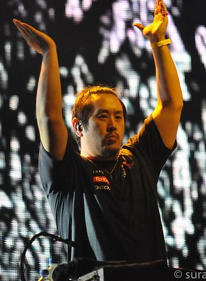

Chester Charles Bennington nació el 20 de marzo de 1976 en Phoenix, Arizona. Su madre era enfermera, mientras que su padre era un detective de la policía que trabajó en casos de abuso sexual infantil. Bennington se interesó por la música a una edad temprana, citando a las bandas Depeche Mode y Stone Temple Pilots como sus primeras inspiraciones, y soñaba con convertirse en miembro de Stone Temple Pilots, lo que logró después, cuando se convirtió en su cantante principal.
Chester Bennington
Mike Shinoda
Michael Kenji «Mike» Shinoda. Shinoda nació el 11 de febrero de 1977 en Panorama City, California y se crio en Agoura Hills, California. Shinoda asistió a Agoura High School con los compañeros de banda de Linkin Park, Brad Delson y Rob Bourdon. Los tres formaron la banda Xero y comenzaron a hacer un intento más serio de seguir una carrera en la industria de la música.
Joe Hahn

Joseph "Joe" Hahn nació en Dallas, Texas el 15 de marzo de 1977 pero creció en Glendale, California. Hahn es coreano-estadounidense de segunda generación. Hahn se graduó de la Herbert Hoover High School en Glendale en 1995. Luego estudió en el Art Center College of Design de Pasadena, pero no se graduó. Hahn se unió a Linkin Park, llamada en ese entonces Xero, en 1997 como el DJ de la banda. Desde entonces, él ha dirigido la mayoría de los videos de la banda.
Rob Bourdon
Robert Gregory Bourdon nació el 20 de enero de 1979. Rob nació en Calabasas, California y ahora vive en Los Ángeles. Sus padres son Gregory y Patty; tiene un hermano menor llamado Dave. Rob comenzó a tocar la batería a la edad de 10 años tras ver un concierto de Aerosmith. Ya que su madre, Patty, fue la exnovia de Joey Kramer. En sus primeros años de adolescencia, Bourdon tocó en algunas bandas con sus amigos. En 1995, Delson, Mike Shinoda y Bourdon formaron Xero que se convertiría en el punto de partida para Linkin Park.
Brad Delson
Brad Delson asistió a la Escuela Superior de Agoura con su amigo de la infancia y compañero de banda Linkin Park, Mike Shinoda. Tocó en varias bandas a lo largo de su carrera en la preparatoria, el más notable grado de ser relativa, en la que conoció y se asoció con el baterista Rob Bourdon. Relative Degree fue simplemente un concierto y, después de alcanzar ese objetivo, se disolvió. Después de graduarse en 1995, Delson, Shinoda, y Bourdon formaron Xero, que eventualmente se convertiría en el punto de partida para Linkin Park.
Dave Farrell
Farrell nació en Plymouth, Massachusetts pero más tarde se mudó a Mission Viejo, California cuando tenía cinco años. Se graduó en la Universidad de California. Toca el bajo, la guitarra eléctrica, el chelo y el violín. Farrell ha declarado que sus influencias han sido su madre y su hermano Joe, al igual Weezer, The Beatles, Deftones, Pink floyd, Guns N Roses, The Smiths, Hughes y Wagner. Farrell fue miembro de un grupo de ska cristiano conocido como Tasty Snax. Mientras asistía a la universidad, practicaba con Brad Delson "tocando el bajo de Brad en su habitación". A pesar de esto, como tenía que viajar con su banda, los Tasty Snax, no pudo tocar con Delson y su banda, que se convertiría en Linkin Park. Tras cambiar su nombre a Snax, Farrell comenzó a tocar el bajo en la banda antes de abandonarla de nuevo para unirse a Linkin Park.